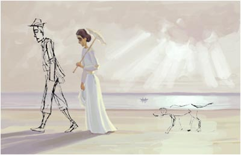

|

På Skagen en sommer.
Og han elsker denne følelsen der han ligger, gynger, tærne vifter utfor kanten på hengekøya, lufta er sval, mild, sola sender ut sine siste stråler før den kryper til køys for natten, og en av disse strålene treffer ham i en stripe over den bare magen og han vet at han kan gynge slik lenge ennå før nattelufta blir for kjølig. Og han elsker den, denne følelsen, melankolien som har krøpet til et sted i hjerteregionen, pulserer rytmisk, gir ham ro. Han elsker noen. Han savner noen. Han elsker å savne noen. Denne tristheten som plasserer ham i verden i stakkete glassklare stunder. I en hengekøye i en overgrodd hage et steinkast fra strandkantens milde bris på Skagen en sommer i en evighet. Han venter og han vil vente litt til. Så vil han gå inn og betrakte overraskelsen han har laget til henne, fotografiene han har fremkalt. Bølgene, havet, lyset. I en rekke har han hengt seks fargebilder av Maria Gullsko, hver for seg små kunstverk, til sammen mer enn han noensinne ville kunne si. Melankolien sender ut bølger han navigerer etter, slik en elektrisk ål finner frem i ukjent farvann, bare tyngre, langsommere. Den har det ikke travelt, melankolien. Den finner frem dit den skal, som hvalsang gjør det, det spres et svakt trykk gjennom vannet, svale bølger i vifteform. På vei inn i flyet snur hun seg. Hun har kjent en liten berøring i nakken, myk som fløyel, hun tror det må ha vært en sommerfugl, 'en mariposa' slår det henne.
Han slumrer lett mens han venter. Han smiler i halvsøvnen, jammen ler han ikke også!
|